Verdens beste spaghettisaus / pastasaus / tomatsaus. Veldig veldig god oppskrift!
Jeg har vært mye i Italia. Ja, i nesten 5 år faktisk. Ja, jeg er faktisk født i Italia. Det er helt sant. Jeg elsker masse ved Italia. Ikke Silvio Berlusconi, men maten, menneskene og maten. Ingen lager bedre is enn italienerne. Ingen lager bedre pasta, ingen lager bedre pizza, ingen lager bedre vin. Ingen lager bedre mat. Basta!
E oggi vi faccio vedere come si fà il sugo di pomodoro.
Min favorittrett: Spaghetti al pomodoro (Spaghetti med tomat). Hemmeligheten bak denne retten er: Gulrot og god tomat.
Du trenger:
1 løk
8 ss god olivenolje
2 store eller 3 små gulrøtter
2 selleristenger
4 fedd hvitløk
1 boks med hermetiske tomater (Min favoritt er Biona- den økologiske. Synes den faktisk er mye bedre enn Mutti)
1 terning kylling-/hønsebuljong
0,5 l vann
2 ss tomatpureè
1/4 ss salt
Litt kvernet pepper
Parmesan + fersk basilikum
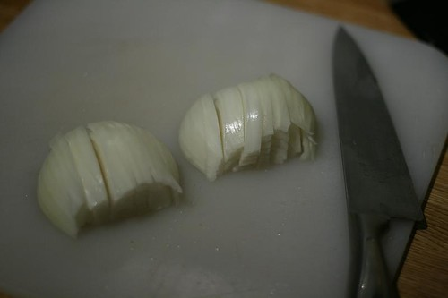
Begynn med å kutte løken i små biter…
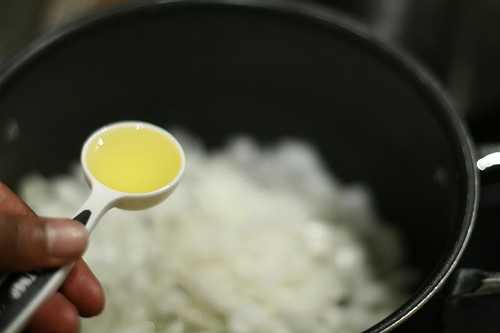
På medium varme steker du løken med 5 ss olivenolje.
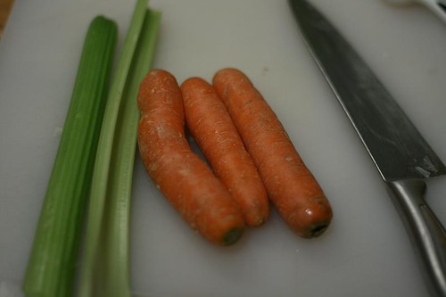
Finn frem tre små gulrøtter (eller to store), og to selleristenger
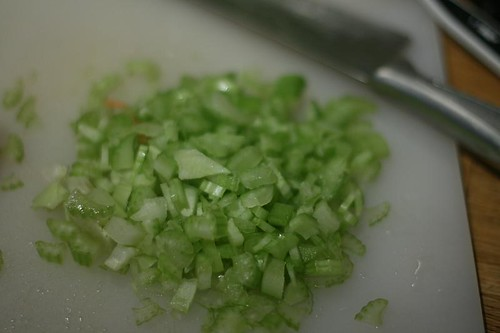
Kutt opp i veldig små biter…
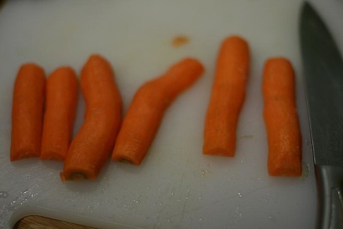
Slik gjør jeg med gulrøttene. Deler dem på langs først. Plasserer dem med den flate siden ned…
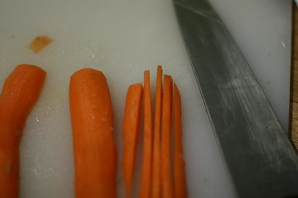
Så deler jeg hver bit i fire deler på langs….
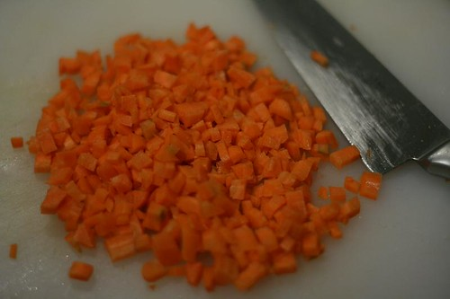
Og så kutter jeg på tvers….til jeg får ganske små biter. DETTE ER VIKTIG! Bitene må være veldig små slik at de fort blir møre.
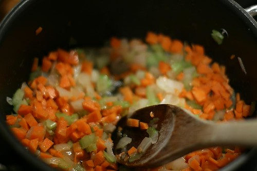
Stek grønnsakene sammen løken. i ca 10-12 minutter. rør ofte. Grønnsakene skal bli helt blanke før du gjør noe mer.
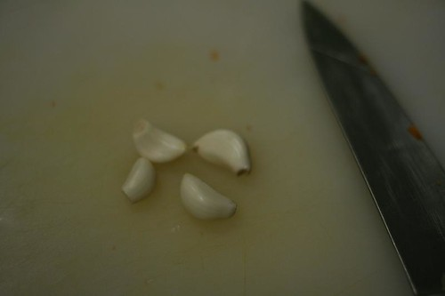
Fire fedd hvitløk…
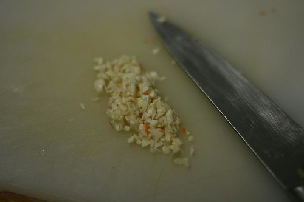
Kutt i små biter….
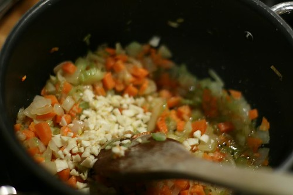
Oppi sammen med grønnsakene i maks 20 sekunder, eller helt til de avgir sin aroma–Hvitløk er digg, ass…
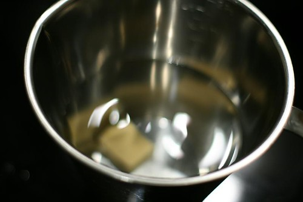
Finn frem en halvliter vann og en buljongterning.
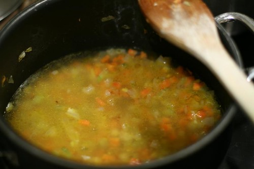
Hell vann+buljong i kasserollen, og la det koke til alt blir redusert 50-60 %.
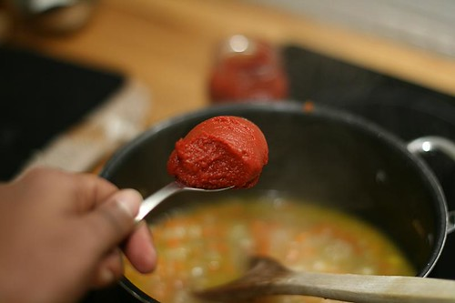
Tilsett så to spiseskjeer med tomatpuree. Ikke vær beskjeden.
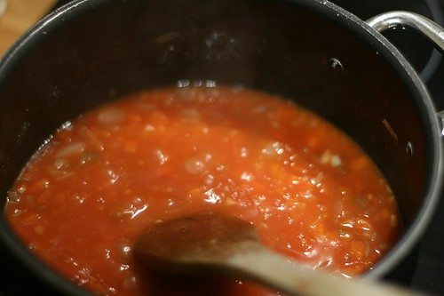
La sausen koke i to minutter til….
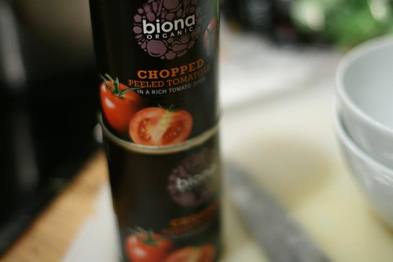
Finn frem en boks tomat på boks. Denne du ser på bildet anbefales på det sterkeste. De selger den i hvertfall på Rimi og Ica. Rimi er billigst. Kvaliteten på tomatene har mye å si. Ettersom vi har veldig dårlig kvalitet på tomatene her i Norge, vil gode hermetiske tomater fra Italia nesten alltid ha en mye høyere kvalitet enn om du skal bruke ferske tomater i sausen.
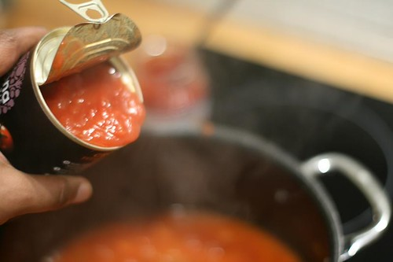
Tilsett de hermetiske tomatene (kun en boks)
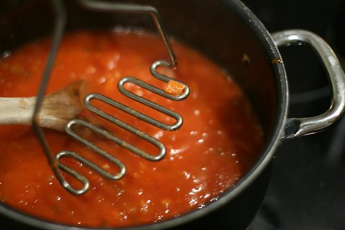
La det koke opp, så finn frem en potetmoser, og mos gulrøttene litt. Sausen blir litt tykkere, og gulrøttene gjør sausen søtere for å kompensere for den bitre tomatsmaken.
La det småkoke i 8 minutter til… ( lager du spaghetti, bør du nå koke opp vannet!)
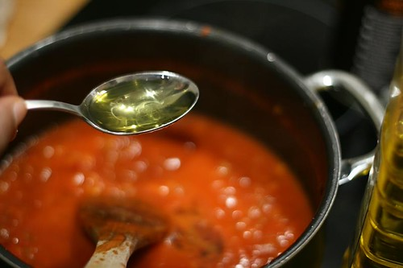
Tilsett så tre spiseskjeer med olivenolje til. Jo bedre kvalitet, des bedre blir sausen. Dette er en olje som ikke er spesielt dyr og ikke spesielt god, men vi kaster ikke olje, så jeg bruker den her.
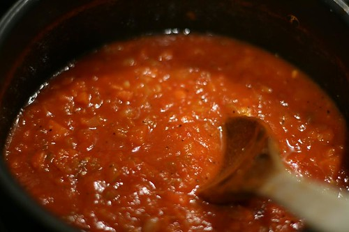
Rør om og smak til med ca 1/4 ss salt og kvernet pepper! La sausen putre i fem minutter… Smak. Voila. den er ferdig. Bonustips: Kjør en liten tur med stavmikseren i sausen for å få den enda jevnere.
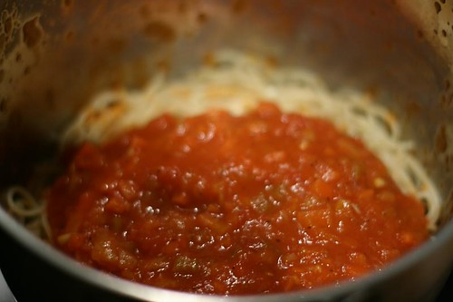
Hell i en gryte med nykokt spaghetti al dente…
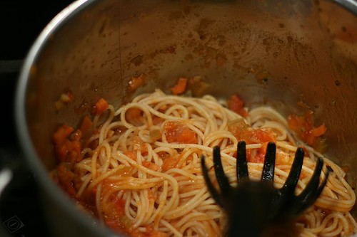
Rør sammen….
Server med masse parmesan.. og hvis du har hakket fersk basilikum (noe jeg dessverre ikke hadde i dag), dryss en spiseskje over parmesanen, og bland godt. Hmmm..
(Ps: mange gjør den feilen og bruker basilikum i sausen når den koker opp, da mister du mye av den friske smaken)
Håper det smaker.
Legg gjerne igjen en kommentar i feltet under dersom du prøver den…
Eller legg deg til på min mailingliste hvis du vil ha beskjed neste gang jeg legger ut en oppskrift: